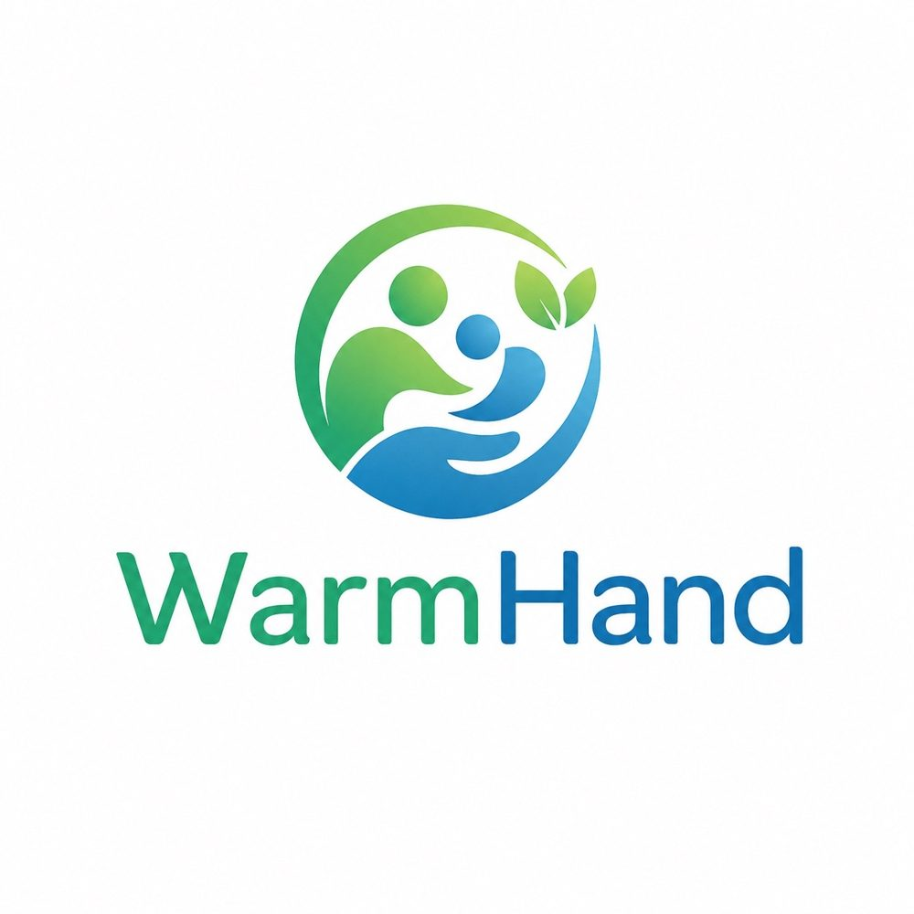

Stigma
People often avoid help because they fear judgement or exposure.

WarmHand by MindCareZimbabwe-born | founder-led | social-worker-led
WarmHand by MindCare is an MVP in private testing and preparing for launch. The platform is being built to help clients connect with qualified social workers through private, structured and human-led support.
Choose a support need. Get matched with a suitable social worker when services open.
Why this matters
People often avoid help because they fear judgement or exposure.
Support can be hard to reach when services are far away or unclear.
Clear, structured pathways can make support easier to understand and use.
The solution being built
Clients start by selecting the kind of support they are looking for.
The platform helps surface suitable social workers through AI-assisted matching and system checking.
Support happens through structured helping conversations with social workers, not AI therapy.
Privacy, safeguarding, terms and support routes guide the platform as it prepares for launch.
Founder credibility
MindCare is being built by Takunda Crighton Nyereyemhuka, a registered social worker from Zimbabwe with psychiatric hospital experience and a focus on practical, human support systems.
The work combines social work practice, mental-health system experience, and disciplined AI-assisted product development.
Built with safeguards
AI supports matching, system checking, testing and product development under human oversight.
AI does not replace social workers and does not provide therapy, diagnosis, emergency advice or clinical decisions.
MindCare is not an emergency service. People in danger should contact local emergency or crisis services.
For applications, partners and accelerators
WarmHand by MindCare is relevant to health-tech accelerators, youth and digital wellbeing fellowships, AI-assisted health innovation roles, social work innovation partnerships, and digital health/product opportunities.
Contact: mindcarezw@gmail.com